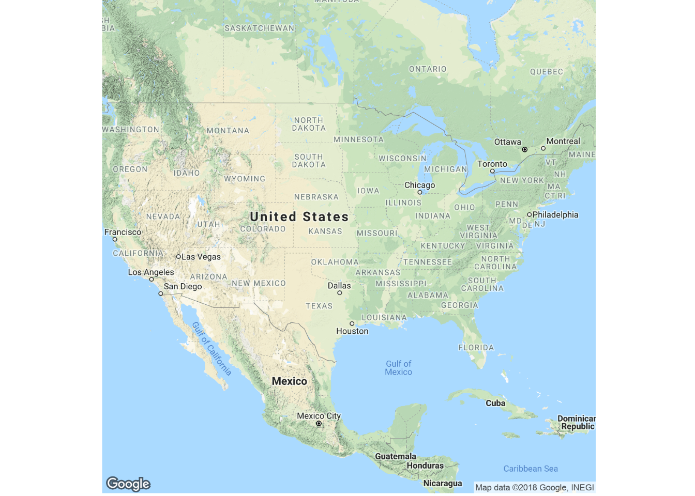
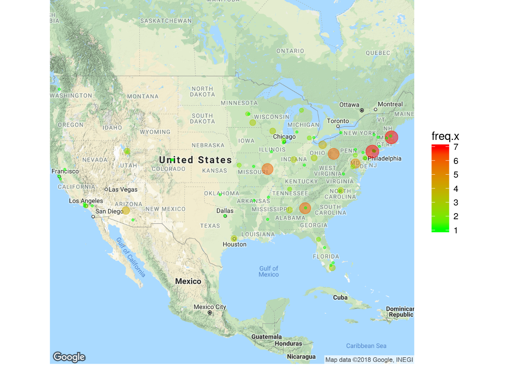
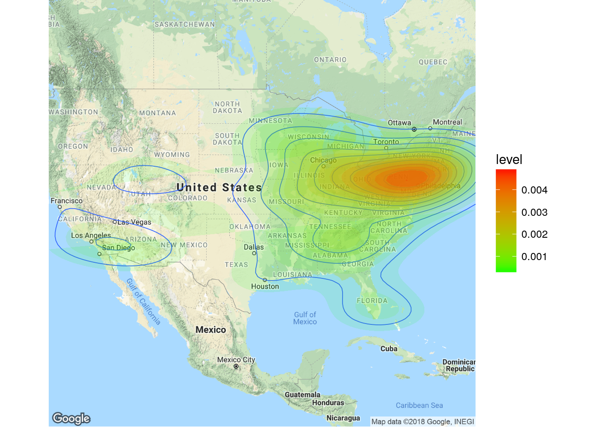

Section 3 Interacting with the National Library of Medicine.
This is an example of an approximation to the database of clinical trials maintained by the National Library of Medicine (NLM) of the National Institutes of Health (NIH). This tool facilitates the exploration and visualization of clinical trials recognized by the government and reported at ClinicalTrials.gov.
The rest of the document will show a step by step approximation to the process of datamining and visualization of the information.
3.1 Searching and datamining the site.
3.1.1 Initial subsetting and downloading from website.
The following table shows the first 6 studies of a total of found after subsetting accross the whole ClinicalTrials.gov dataset for maches with the terms “acute AND care AND surgery”.
Once the selection is located and downloaded, the next step is to extract and keep only the locations in the United States.
load("~/Dropbox/PhD UABC/Colaborations/Loma Linda/bookdown-demo-master/criticalCareClinicTrials.RData")
# First five results of the search (about 1500+ locations):
#library(DT)
library(DT)
#kable(head(c, 5), format = "html")
datatable(head(c, 5))3.1.2 Extracting address and getting rid of the rest.
# Highest occurence 20 results from the search:
library(knitr)
test<-e
kable(head(test, 10))| address | freq | |
|---|---|---|
| 8 | Boston,Massachusetts | 7 |
| 48 | New York,New York | 7 |
| 4 | Atlanta,Georgia | 6 |
| 56 | Pittsburgh,Pennsylvania | 6 |
| 59 | Saint Louis,Missouri | 6 |
| 6 | Baltimore,Maryland | 5 |
| 17 | Cleveland,Ohio | 4 |
| 55 | Phoenix,Arizona | 4 |
| 7 | Birmingham,Alabama | 3 |
| 19 | Columbus,Ohio | 3 |
3.2 Visualization
Using the Google Maps API to obtain latitud and longitude coordinates from city names and states.
3.2.1 Visualizing results in a map
Getting the map background with the right zoom.
# load the required libraries
library(ggplot2)
library(ggmap)
# download the map background images
map<-get_map(location='united states', zoom=4, maptype = "terrain",
source='google',color='color', force=TRUE)
ggmap(map) +
theme(axis.line = element_blank(),
axis.text = element_blank(),
axis.ticks = element_blank(),
plot.margin = unit(c(0, 0, -1, -1), 'lines')) +
xlab('') +
ylab('')
3.2.2 Mapping frequency of trials by city as density.
ggmap(map) + geom_point(
aes(x=lon, y=lat, show_guide = TRUE, colour=freq.x),
data=g, alpha=.5, na.rm = T, size = g$freq.x*0.8) +
scale_color_gradient(low="green", high="red") +
theme(axis.line = element_blank(),
axis.text = element_blank(),
axis.ticks = element_blank(),
plot.margin = unit(c(0, 0, -1, -1), 'lines')) +
xlab('') +
ylab('')
3.2.3 Maping the Heatmap for the same trials.
ggmap(map) + geom_density2d(data = h, aes(x = lon, y = lat), size = 0.3)+
stat_density2d(data=h, aes(fill = ..level.., alpha = ..level..), geom="polygon", bins=15) +
scale_fill_gradient(low = "green", high = "red")+
scale_alpha(range = c(0.1, 0.3), guide = FALSE) +
theme(axis.line = element_blank(),
axis.text = element_blank(),
axis.ticks = element_blank(),
plot.margin = unit(c(0, 0, -1, -1), 'lines')) +
xlab('') +
ylab('')
3.2.4 Isolating trials in California
#cali <- subset(c,c$address.state=="California")
library(DT)
datatable(cali[,1:10])